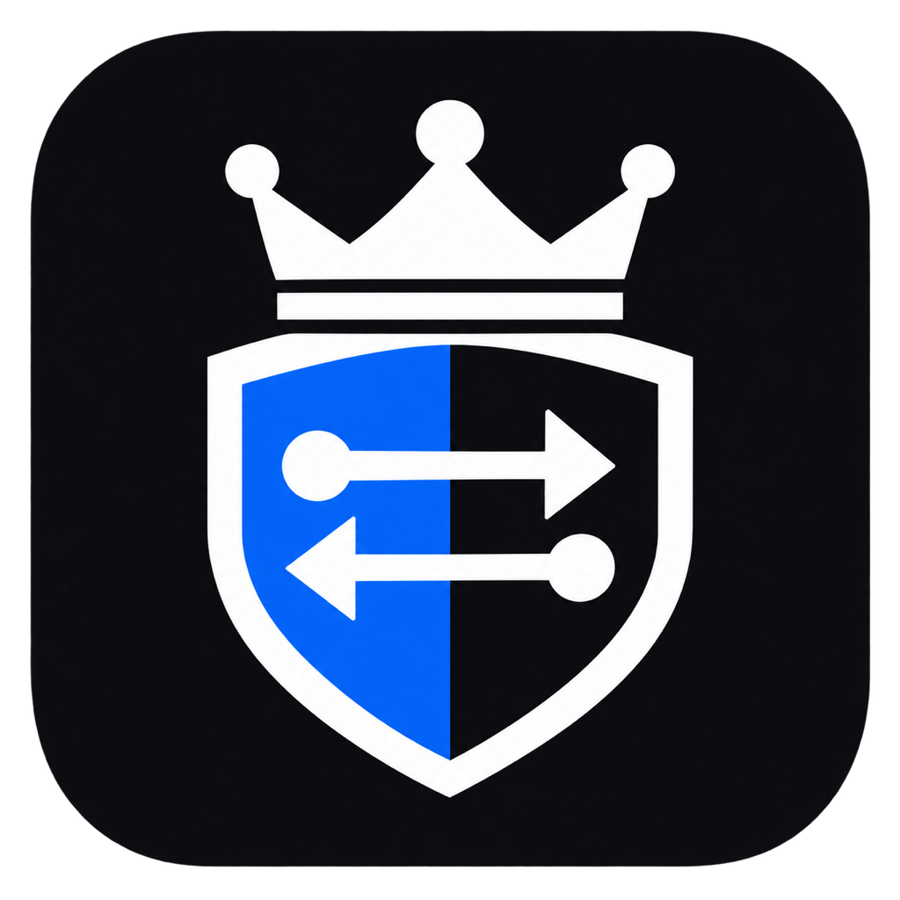

Press Start, then browse normally.
Proxyking detects the private IPv4 address on your active route and listens on that interface.
Detecting…
Pause stops recording while keeping traffic routed through Proxyking. Stop or closing Proxyking restores your previous proxy settings.
Install and trust the public certificate to inspect browser HTTPS traffic.
Checking certificate trust…
Unsupported protocols and certificate-pinned apps are passed through as encrypted tunnels.